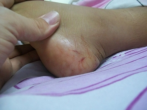

5 Things to Know About Rattlesnakes and Their Babies
UA College of Pharmacy | Aug. 6, 2014
Arguably, snake season is year-round in Arizona, a state known for its rattlers. But baby rattlesnakes are born in July and August, making these two months especially dangerous for hikers, gardeners, children and others at high risk of exposure to rattlesnake bites.
So far this year, 74 rattlesnake bites to humans have been reported to the Arizona Poison and Drug Information Center. Based at the University of Arizona College of Pharmacy, the center serves the entire state of Arizona with the exception of Maricopa County, providing free and confidential poison and medication information to callers around the clock.
Specialists answering the phones at the center regularly receive calls from Arizonans of all ages who don't realize they were bitten by a rattler. The poison center urges anyone who feels a mysterious sting, pinch or bite while outdoors to immediately call the center at 800-222-1222.
"We will ask a few questions that will help you either identify possible snakebite or eliminate it," said Keith Boesen, director of the Arizona Poison and Drug Information Center. "With snakebite, the sooner the medical treatment, the better the outcome, so calling us right away can make a very big difference for the victims and the medical teams treating them."
The center advises anyone who might come cross paths with rattlesnakes to be aware of these five things:
- Baby rattlesnakes range in length from 6 to 12 inches and are easily camouflaged by brush and grass.
- Baby rattlesnakes are rattleless until they first shed their skins, so there will be no infamous "chica-chica" sound before they strike.
- Despite their impish size, baby snakes have enough venom to be very dangerous if they bite a human.
- Adult rattlesnakes do not always rattle an audible warning before or while they are biting.
- It's a good idea to call the poison center if you notice an unidentified small cut or wound, even if you feel no pain. With the lack of telltale rattle warning, people can be bitten without knowing what has happened until they notice their symptoms and attribute them to a snakebite.